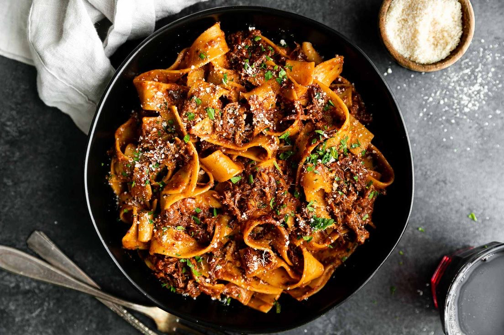

This easy and delicious ragu is perfect for date night. Don't skimp on the parm!
Looking for more cozy winter recipes? Be sure to add this Cacio e Pepe to your list.
Ingredients
- 2 tbsp. extra-virgin olive oil, divided
- 2 lb. chuck roast, cut into 2" cubes
- Kosher salt
- Freshly ground black pepper
- 1 medium yellow onion, chopped
- 5 cloves garlic, thinly sliced
- 1/2 tsp. fennel seeds
- 1/4 tsp. red pepper flakes
- 2 tbsp. tomato paste
- 1/4 c. red wine
- 1 (28 oz.) can whole peeled tomatoes
- 1/4 c. water
- 3 sprigs thyme
- 1 bay leaf
- 2 tps. balsamic vinegar
- Parmesan, for serving
- Freshly chopped parsley, for serving
Recipe Instructions (Steps)
- In a large stock pot over medium heat, heat 1 tablespoon oil.
Season chuck roast with salt and pepper and sear, in batches
if needed, until browned on all sides, 10 minutes.
Remove into a large bowl.
- Heat remaining oil, still over medium heat.
Add onion and cook until soft, 6 minutes.
Add garlic, fennel seeds, and red pepper flakes and cook
until fragrant, 1 minute more.
- Add tomato paste and cook until it is darkened in color,
1 to 2 minutes more. Deglaze pot with wine, scraping any
brown bits up at the bottom of your pot with a wooden spoon.
- Add whole peeled tomatoes, water, thyme, bay leaf, balsamic vinegar,
and seared pot roast and season with salt and pepper.
Stir to combine and reduce heat to low. Cover and simmer,
stirring occasionally, until meat easily shreds, 2 to 2 1/2 hours.
Use a wooden spoon to break up tomatoes and meat,
and remove bay leaf. Serve over your favorite pasta or polenta.
Top with parmesan and parsley before serving.
Return to top
Main page